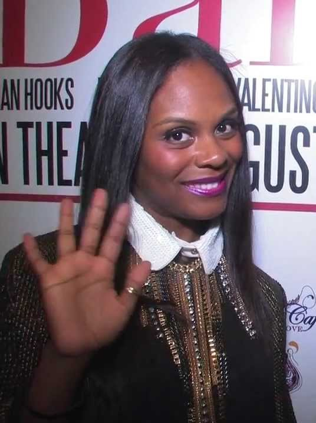
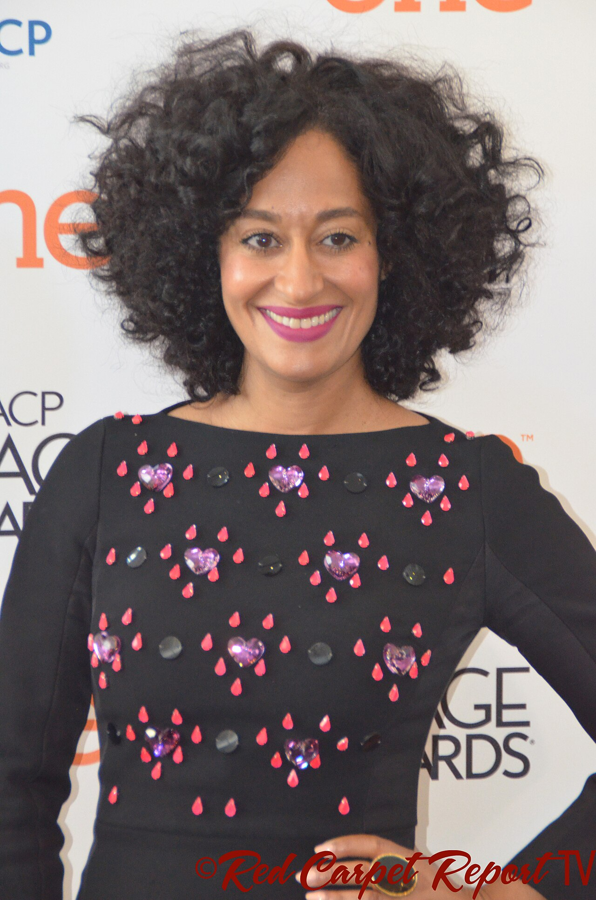
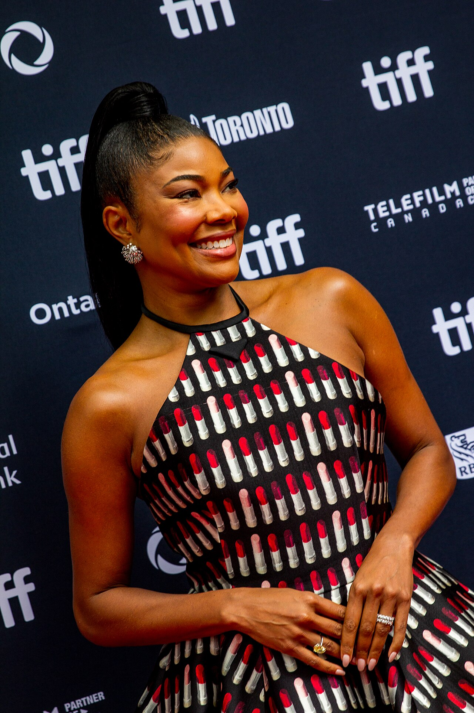
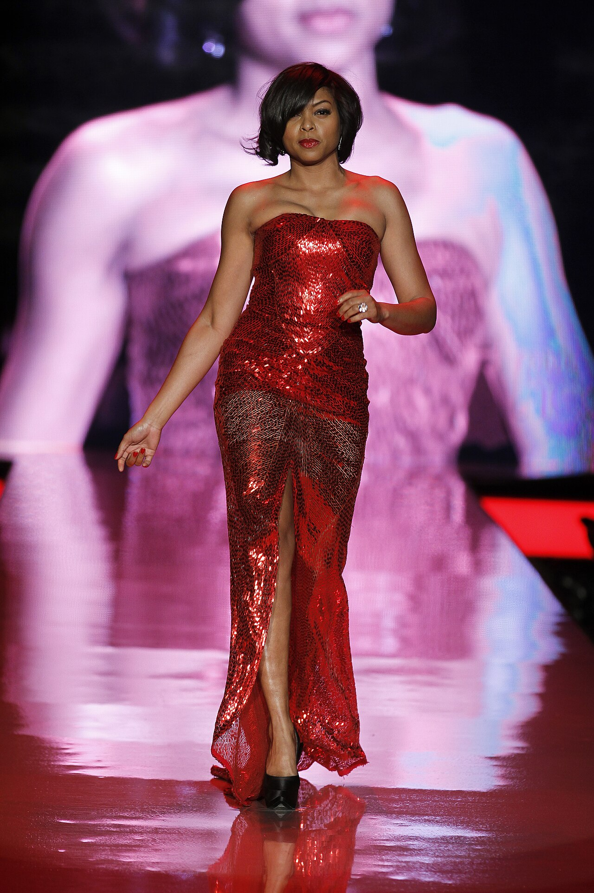
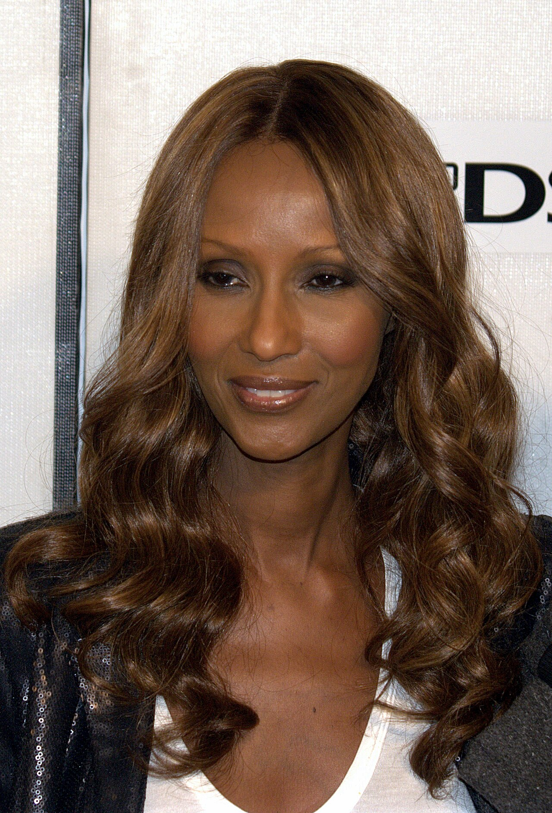
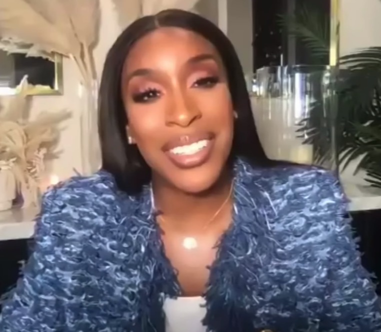
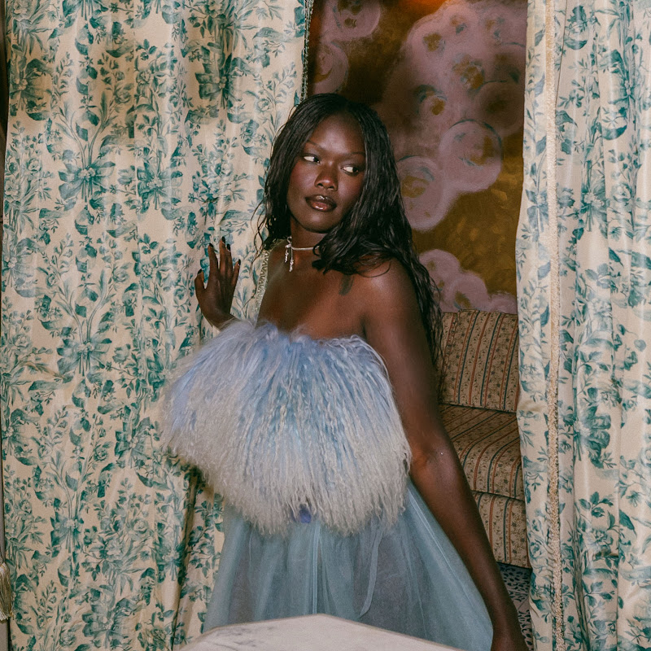
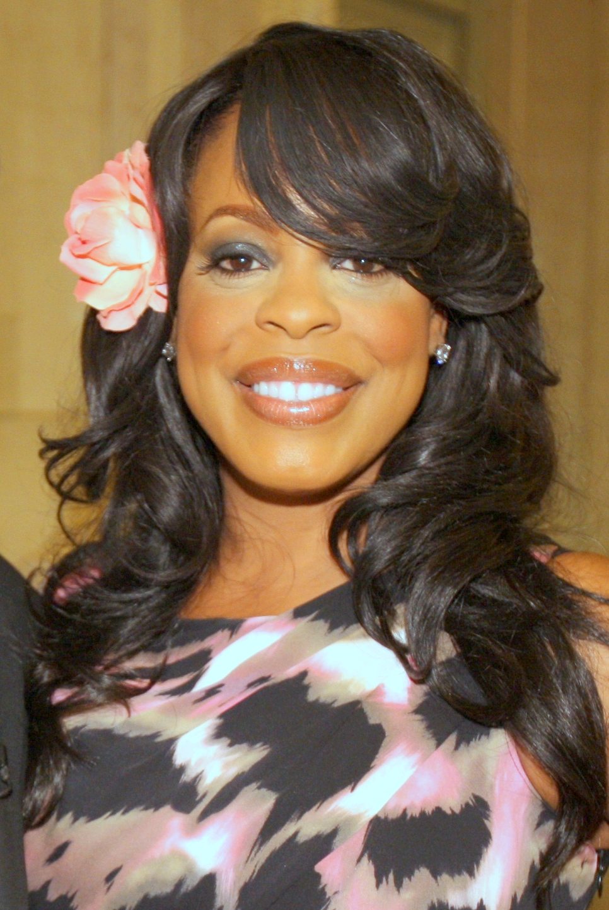

不是“演技派”，是“她就在你手机里”
九个真人参考：有图、有介绍、有取什么。英文后括号里是中文。
核心三人组：脸/年龄 + 网红感 + 美/发型

Sheryl Lee Ralph
《Abbott Elementary》的 Barbara Howard；Emmy 获奖、红毯/时装感强，但说话像你认识的阿姨。
取：脸/年龄锚点、骨相、银发/大卷、glam 但亲和。不取：太“颁奖礼”的端。

Tabitha Brown
素食/生活方式博主，“Auntie Tab”；暖、好笑、会聊天、会做饭，是“网红感”本身。
取：声音、节奏、亲和、日常分享、镜头里的“她”。不取：她 46 岁的脸；Claudette 要 68 岁的年龄感。

Tracee Ellis Ross
《Black-ish》的 Rainbow； glam、幽默、头发/时尚是 signature，红毯和日常都成立。
取：发型、唇色、耳环、衣服的“亮”；不取：她的脸型；Claudette 的骨相另定。
更多“黑人美女 / 网红感”参考

Gabrielle Union
皮肤/状态/健康美；红毯和日常都“干净亮”。

Taraji P. Henson
亮、辣、有气场；头发和红唇是 signature。

Iman
高颧骨、长脖子、regal；70 岁仍然是“女王”。

Jackie Aina
深肤色眼妆/唇妆/高光的教科书；真正的“网红妆”。

Nyma Tang
深肤色底妆/不显灰的代表；适合做“皮肤质感”参考。

Niecy Nash
敢说、敢穿、好笑；glam 但不绷着。
怎么用到 Claudette 身上
| 层 | 用谁 | 怎么用 |
|---|---|---|
| 脸/年龄（68） | Sheryl Lee Ralph（69）为主；Iman（70）为辅 | 骨相、颧骨、银发/大卷、68 岁的皮肤和颈纹；不要拿 30 岁网红的脸 |
| 皮肤/底妆 | Gabrielle Union + Nyma Tang | 深肤色不显灰、健康光泽、干净通透；不是厚粉 |
| 眼妆/唇 | Jackie Aina + Taraji | 莓色/酒红唇、金棕眼影、睫毛有存在感；不要舞台浓妆 |
| 发型 | Tracee Ellis Ross + Sheryl | 大银灰 Afro/大卷、发量、轮廓；不是贴头皮小 TWA |
| 衣服/珠宝 | Tracee + Taraji + Iman | 深皇家紫、金饰、夸张耳环/粗链；衣服是 varsity/cargo，不是礼服 |
| 性格/声音 | Tabitha Brown + Niecy Nash | 暖、好笑、会聊天、会自嘲；不是“演技派接受采访” |
一句话：脸和年龄用 Sheryl / Iman；皮肤和妆用 Gabrielle / Nyma / Jackie / Taraji；发型/衣服用 Tracee；性格/网红感用 Tabitha / Niecy。
不要：把九个人的五官拼在一起；年轻网红只借“妆/皮肤/发型”，不借骨相。
旧五个怎么处理
Phylicia / Cicely / Jenifer / Loretta / Angela 不再当“主脸”。只保留：Phylicia 的骨相、Cicely 的银发/杏眼、Jenifer 的眼神、Loretta 的亲和、Angela 的体态。主脸转到 Sheryl / Iman，网红感转到 Tabitha / Tracee / Niecy。
图源：Wikimedia Commons（Sheryl Lee Ralph、Tabitha Brown、Tracee Ellis Ross、Gabrielle Union、Taraji P. Henson、Iman、Jackie Aina、Nyma Tang、Niecy Nash；Nyma 为 YouTube 频道头像）。仅作内部选角/造型参考，不复制真人脸，不用于对外发布。